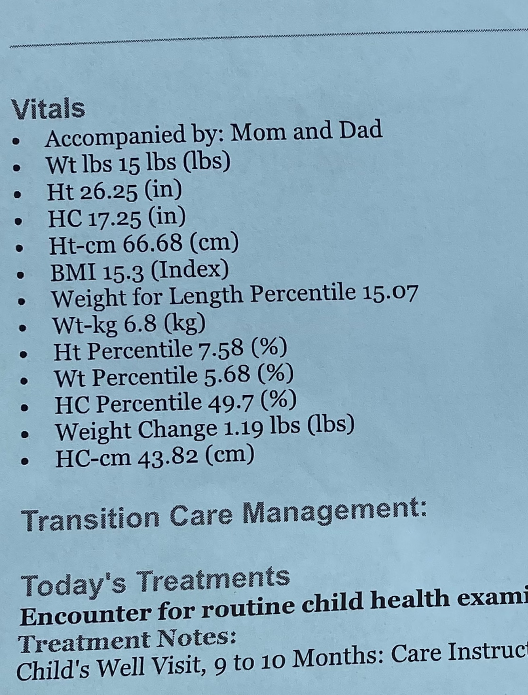
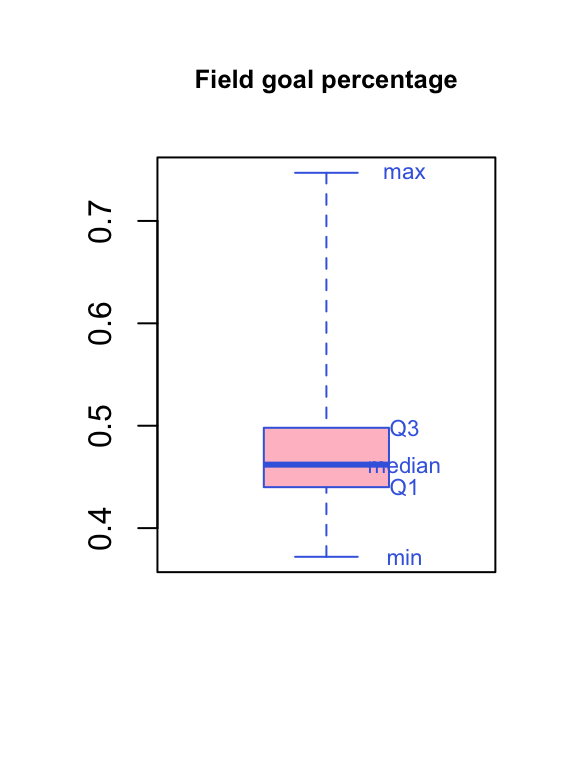
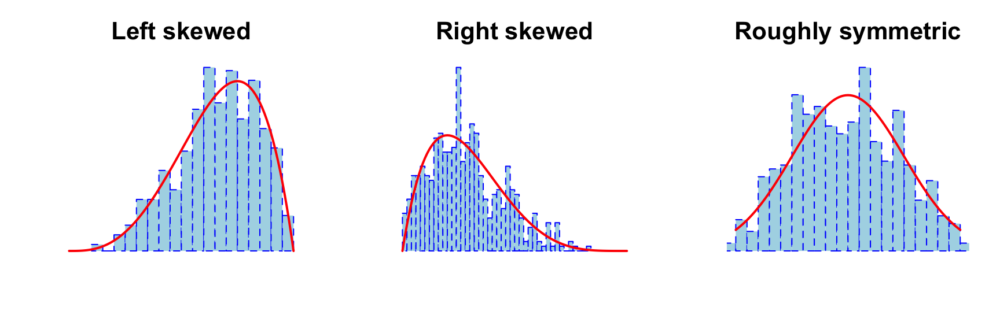
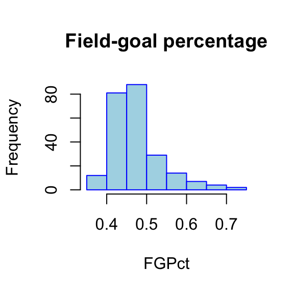

Data: NBA players
To describe a univariate distribution, we focus on three important properties: location, spread, and shape
Tools: statistics, tables, and visualizations
Important statistics:
Location (also referred to as central tendency) is a measure of a typical/average value
Example: what is the mean, median, and mode for this data?
Min. 1st Qu. Median Mean 3rd Qu. Max.
5.0 6.0 6.5 7.1 7.0 14.0 [1] 7.1[1] 6.5sleep
5 6 7 8 14
2 3 3 1 1 5 6 7 8 14
2 3 3 1 1 5 6 7 8 14
2 3 3 1 1 sleep Freq Percent
1 6 3 0.3
2 7 3 0.3
3 5 2 0.2
4 8 1 0.1
5 14 1 0.1The percentile (rank) of a value is the percentage below that value

The kth percentile of a variable is a value such that k percent are below that value
Special percentiles: first, second and third quartiles (i.e., Q1, Q2, and Q3) correspond to the 25th, 50th, and 75th percentiles; Q2 is the median
Percentiles (especially Q1, Q2, and Q3) provide a sense of the location of the distribution
Spread can be measured by range and interquartile range (IQR)
Min. 1st Qu. Median Mean 3rd Qu. Max. NAs
0.0000 0.3360 0.3640 0.3501 0.3910 0.4610 5 [1] 0.000 0.461 Min. 1st Qu. Median Mean 3rd Qu. Max.
0.3720 0.4400 0.4620 0.4777 0.4980 0.7470 25% 75%
0.440 0.498 [1] 0.058Are NBA players more consistent in their field goal shooting ability, or in 3-point field goal shooting ability?
Range is very affected by outliers!
Boxplot is based on only five numbers: min, Q1, Q2, Q3, max (also called the five-number summary)
boxplot(NBAPlayers2024$FGPct,
main=paste('Field goal percentage'),
col='pink',
border='royalblue',
cex.main=0.8,range=0)
# `text()` adds text to an *existing* plot at the specified coordinate
text(1.25,quantile(NBAPlayers2024$FGPct,na.rm = T),
labels=c('min','Q1','median','Q3','max'),
col='royalblue',
cex=0.7)
[1] 0.1[1] 75[1] 23.80476For determining the direction of skewness, look for tail values; extreme tail values are referred to as outliers
Histogram is a widely used univariate plot (in base R, use hist())
When describing shape, pay attention to: skewness, outliers, number of modes, and any other unusual pattern in the data

Give a thorough description of the variable FGPct (Field goal percent), using statistics and visualizations as needed. Mention properties of location and spread, and describe the shape of the distribution.
The field-goal percentages based on NBA data from 2024 range from 0.372 to 0.747. The mean is 0.478, while the median is 0.462, so a typical player has a field-goal percentage of about 46%. The middle 50% of players have field-goal percentages from 0.440 to 0.498, giving an interquartile range of 0.058. The standard deviation is 0.062.
The distribution is right-skewed: the mean is higher than the median, and the upper tail extends farther than the lower tail.
[1] 0.372 0.747[1] 0.4776709[1] 0.462 25% 75%
0.440 0.498 [1] 0.058[1] 0.06157083
Z-score (or standardized score) of a variable is calculated as (value - mean) / sd
It’s used to standardize a variable so that you can make sense of the value regardless of the scale or unit
Example: Tom has an SAT of 1400. Jerry has an ACT of 28. Who has a better score? We know that:
Q: what’s the z-score for Tom? for Jerry?
Q: Interpretations of the z-scores?
Tom’s z-score is \((1400 - 1100) / 150 = 2\). Jerry’s z-score is \((28 - 25) / 2 = 1.5\).
Tom’s SAT score is 2 standard deviations above the SAT mean, while Jerry’s ACT score is 1.5 standard deviations above the ACT mean. Relative to their respective tests, Tom has the higher score.
in R:
Calculate the z-scores of FGPct and FG3Pct and store the z-scores as separate variables in the data frame.
Print the information for Stephen Curry and give an interpretation for the z-scores of FGPct and FG3Pct. Relatively speaking, is he better at field goals or 3-point field goals?
Find a player whose field goal percentage is above the average, but 3-point field goal percentage is below the average.
Find a player who is very capable in both field goal and 3-point field goal.
What is the mean and sd for the z-scores of FGPct and FG3Pct?
NBAPlayers2024 <- NBAPlayers2024 %>%
mutate(FGPct.z = as.numeric(scale(FGPct)),
FG3Pct.z = as.numeric(scale(FG3Pct)))
NBAPlayers2024 %>%
filter(Player == "Stephen Curry") %>%
select(Player, Team, FGPct, FG3Pct, FGPct.z, FG3Pct.z)
NBAPlayers2024 %>%
filter(FGPct.z > 0, FG3Pct.z < 0) %>%
select(Player, Team, FGPct, FG3Pct, FGPct.z, FG3Pct.z,MinPerGame)%>%
arrange(desc(MinPerGame))
NBAPlayers2024 %>%
filter(FGPct.z > 1, FG3Pct.z > 1) %>%
select(Player, Team, FGPct, FG3Pct, FGPct.z, FG3Pct.z)
summary(NBAPlayers2024$FGPct.z)
summary(NBAPlayers2024$FG3Pct.z)Add the standardized variables with scale(), as shown in the code above.
Stephen Curry’s FGPct z-score is -0.449, while his FG3Pct z-score is 0.768. His field-goal percentage is about 0.449 standard deviations BELOW the sample mean, while his 3-point percentage is 0.768 standard deviations ABOVE the sample mean. Relative to other players, he is stronger at 3-point field goals.
DeMar DeRozan is one example: his FGPct is 0.038 SDs above the mean, while his FG3Pct is 0.226 SDs below the mean.
Jalen Williams is one example of a player who is very capable in both areas: his FGPct z-score is 1.012 and his FG3Pct z-score is 1.020, so both are more than one standard deviation above their respective means.
The mean of each z-score variable is approximately 0, and the standard deviation is 1; this is expected by how z-scores are calculated.